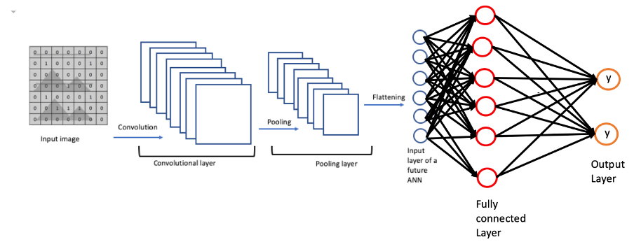
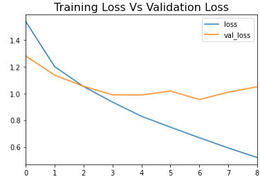
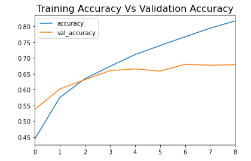
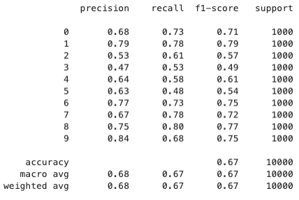
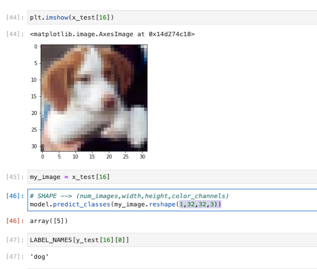

Unit 9: Introduction to Convolutional Neural Networks (CNNs)

Convolutional Neural Networks (CNNs) are a specialised type of artificial neural network designed primarily for image and video recognition, as well as other tasks that involve grid-like data (Sewak et al., 2018). They have proven to be highly effective in tasks such as object detection, face recognition, and image segmentation (Sharma, 2023). This unit covered the foundational concepts of CNNs, their architecture, and their applications. This was done through reviewing of an implementation Convolutional Neural Network (CNN) for object recognition using the Keras library on the CIFAR 10 dataset.
Here's a breakdown of the notebook:
-
Importing necessary libraries
The notebook begins by importing necessary libraries such as TensorFlow and Keras. These libraries provide the necessary functions and classes to create and train a deep learning model.
-
Loading the CIFAR-10 dataset
The CIFAR-10 dataset is a popular dataset for image classification, containing 60,000 32x32 color images in 10 different classes (Krizhevsky, 2009). The dataset is divided into 50,000 training images and 10,000 testing images. The dataset is loaded using the `cifar10.load_data()` function.
-
Preprocessing the data
The images and labels are preprocessed before they are fed into the model. The images are normalised to have values between 0 and 1, and the labels are one-hot encoded.
-
Creating the CNN model
The model is created using Keras' Sequential API. The model consists of several convolutional layers followed by max pooling layers. After the convolutional base, the model has one or more dense layers for classification. The model uses the ReLU activation function in the convolutional layers and the softmax activation function in the final layer.
-
Compiling the model
The model is compiled with the Adam optimizer, the categorical crossentropy loss function, and accuracy as the metric.
-
Training the model
The model is trained on the training data using the `fit()` function. The number of epochs (25) are defined in this step. Early stopping was also added to the model to improve the model’s generalization ability, that is to avoid overfitting. The performance of the model (loss and accuracy) on both the training and validation data is plotted. It is also noted that while the model’s training was set for 25 epochs, it did stop at 9 epochs due the early stopping observing no improvement in the validation loss.


-
Evaluating the model
The model's performance is evaluated on the test data using the `predict()` function. The predictions are then compared with the actual labels to calculate the precision, recall, f1-score, and support.

The model performs best on class 9, with the highest precision (0.84) and a good f1-score (0.75). The lowest performance is observed in class 3, with the lowest precision (0.47), recall (0.53), and f1-score (0.49). The overall accuracy of the model is 67%, with macro and weighted averages of precision, recall, and f1-score around 0.67-0.68, indicating consistent performance across classes with room for improvement.
-
Visualising a single prediction
The notebook ends by visualising a single image from the test set, making a prediction for this image using the trained model, and comparing the prediction to the actual label.

From this snapshot above the image shown is correctly classified by the CNN as a dog. The predicted class (array([5])) matches the actual label ('dog'), indicating that the model has learned to correctly identify this image.
This example demonstrates the process of using a trained CNN to classify new images by reshaping the input, predicting the class, and mapping the class to the corresponding label.
Links:
References
Krizhevsky, A. (2009) CIFAR-10 and CIFAR-100 datasets Available from: https://www.cs.toronto.edu/~kriz/cifar.html [Accessed 24 May 2024].
Sewak, M., Karim, M.R. & Pujari, P. (2018). Practical Convolutional Neural Networks. Packt Publishing. Available from:
https://learning.oreilly.com/library/view/practical-convolutional-neural/9781788392303/ [Accessed 24 May 2024].
Sharma, P., 2023. Applications of Convolutional Neural Networks(CNN). Analytics Vidhya. Available from:
https://www.analyticsvidhya.com/blog/2021/10/applications-of-convolutional-neural-networkscnn/ [Accessed 27 May 2024].